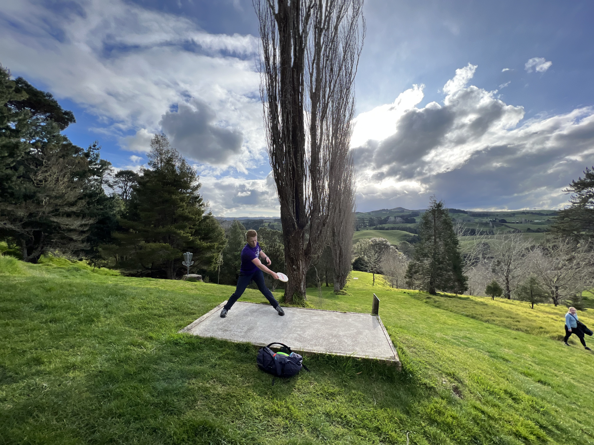

Jack Schreuder (Disc Golf)
Jack Schreuder is a professional disc golfer from Seattle Washington. He turned pro in 2023 at age 21 after a four year amateur career. His PDGA number is 102312. Jack has played 7 events so far in his rookie season, accumulating $472 in prize money, as well as 0.5 Disc Golf Pro Tour points. His average finishing place is 22nd.Here is the cover image in a scaled size:

Here is the cover image in its original size: